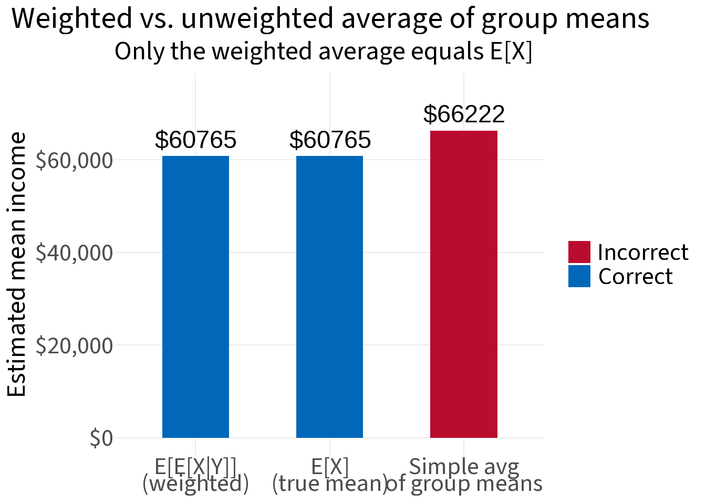

The law of iterated expectations (also called the tower property or Adam’s law) states:
\[E[X] = E\big[E[X \mid Y]\big]\]
In words: the overall average of X equals the weighted average of the group-specific averages of X, where the weights are the group sizes.
This sounds obvious once you see it — but it’s worth being precise about what “weighted average” means here, because a common mistake is to average group means without accounting for group size.
The setup
We have a sample of 1,000 people. For each person we observe:
Y — their highest level of education (High School, College, or Graduate)
X — their annual income (in USD)
Income tends to be higher for more educated workers, and the three groups are different sizes.
EX <-mean(df$income)cat("E[X] = overall mean income: $", round(EX, 0))
E[X] = overall mean income: $ 60765
Step 2: The conditional means E[X | Y]
Now compute the mean income within each education group. This gives us E[X | Y] — a function of Y that assigns each person their group’s average income.
To get E[E[X | Y]], we take the expectation of the conditional mean over the distribution of Y. Since Y is discrete, this is a weighted average of group means, weighted by group proportions:
They’re equal (up to simulation noise). The law holds.
The key pitfall: unweighted averages
A common mistake is to average group means without weighting by group size:
Code
unweighted_mean <-mean(group_stats$mean)cat("Weighted avg of group means (correct): $", round(E_EXY, 0), "\n","Unweighted avg of group means (wrong): $", round(unweighted_mean, 0))
Weighted avg of group means (correct): $ 60765
Unweighted avg of group means (wrong): $ 66222
These differ because the three groups are not the same size. High School (40%) and College (45%) workers outnumber Graduate (15%) workers. The unweighted average gives Graduate workers too much influence, pulling the result upward.

The law of iterated expectations is precise: the weights must come from the marginal distribution of Y — i.e., the actual proportion of people in each group.
Why it works: decomposing the sum
We can see the arithmetic directly. The overall mean is just the total income divided by n:
The key practical lesson: when averaging subgroup means to recover an overall mean, weight by group size. An unweighted average of group means is not the same as the population mean unless all groups are the same size.